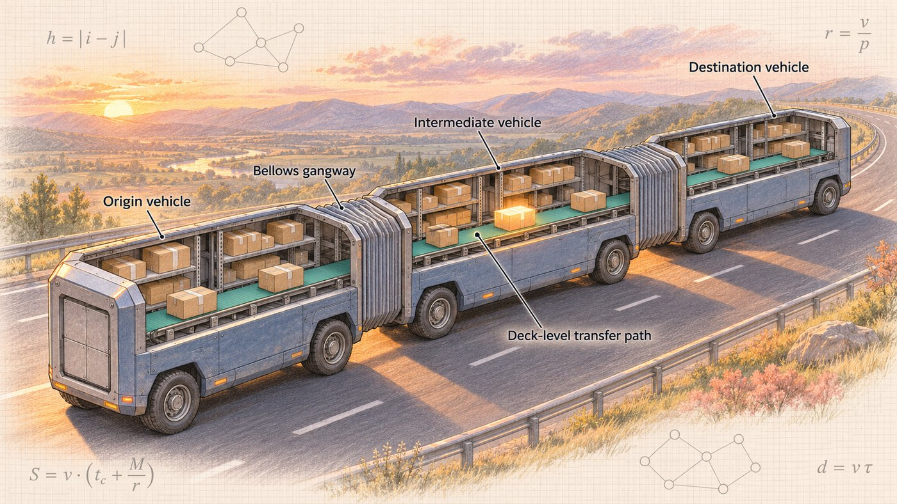
The Sorting Hub That Drives
Routing destination-addressed packages through a coupled chain of autonomous cargo vehicles: design, a routing model and the limits of sorting on the move
Abstract
Parcels spend much of their journey standing still. In a hub-and-spoke network a vehicle drives to a fixed building, stops, is unloaded, and its cargo is sorted and reloaded onto other vehicles, and the cycle repeats at the next hub. This paper describes a different arrangement, developed under the name Worm Cargo. Driverless cargo vehicles releasably couple into a live chain, either while travelling along a shared road or while parked. The coupling forms an enclosed transfer path between their cargo areas, and an automated transfer mechanism moves each package, according to its own destination identifier, to the vehicle that will carry it onward. A package can cross an intermediate vehicle that is neither its origin nor its destination to reach a vehicle further along the chain. When the vehicles separate, each already carries the packages for the place it serves.
We describe the system and give a simple, open model of what it changes and where it stops working. On a long corridor with two hub visits of six hours each, replacing hub dwell with sorting on the move removes about 12.5 hours of a 38.4-hour trip; the saving is almost entirely the dwell assumption. Re-ordering the vehicles in a chain matters: moving a feeder vehicle from the end to the middle of a five-vehicle chain cuts the transfers needed from 3,000 to 1,800 and halves the load on the busiest link. The model also exposes the limits plainly. One coupling aperture passes about 2,000 parcels an hour, and the robots that pull parcels from storage are often slower still. Coupling and decoupling alone use about 20 km of shared road at highway speed, so a shared segment of 15 km sorts nothing, and sorting 1,200 parcels from one feeder vehicle needs 34 to 140 km of road together, depending on chain order, handling robots and decks. Catching up to a partner that is even five minutes ahead costs tens of kilometres.
No prototype exists. Every number in the analysis comes from a published model with stated assumptions, and the paper ends with the tests that would confirm or refute it.
Keywords: parcel sortation, middle-mile logistics, cross-docking, hub-and-spoke networks, autonomous vehicles, modular vehicles, physical internet, last-mile delivery
- 1. Introduction
- 2. Related work
- 3. The system
- 4. Through-routing in a live chain
- 5. What hub dwell costs
- 6. Chain order
- 7. The aperture is the bottleneck
- 8. How much shared road a sort needs
- 9. More capacity through one coupling
- 10. Custody, safety and security
- 11. The last mile
- 12. Limitations and evaluation plan
- 13. Conclusion
- References
1. Introduction
A parcel network is built around places where cargo stops. Between first pickup and final delivery, the usual middle-mile cycle is: drive to a fixed installation, stop, unload, sort by onward destination, reload onto other vehicles, and drive on. The cycle repeats at each hub on the way. Hub-and-spoke design exists for good reasons. Concentrating flows at a few nodes lets a network serve many origin and destination pairs with few links, and the problem of where to put those nodes is a classic of operations research [1]. Cross-docking, in which goods pass from inbound to outbound vehicles with little or no storage, is the refined form of the same idea [2].
The cost is that every parcel must come to rest at every node on its path. It waits in a trailer for a dock door, waits to be unloaded, waits on a sorter, and then waits for the outbound vehicle to depart. The route itself bends to reach the hub, even when the hub lies off the line from origin to destination. Each handling is also one more chance for damage, delay or a missort.
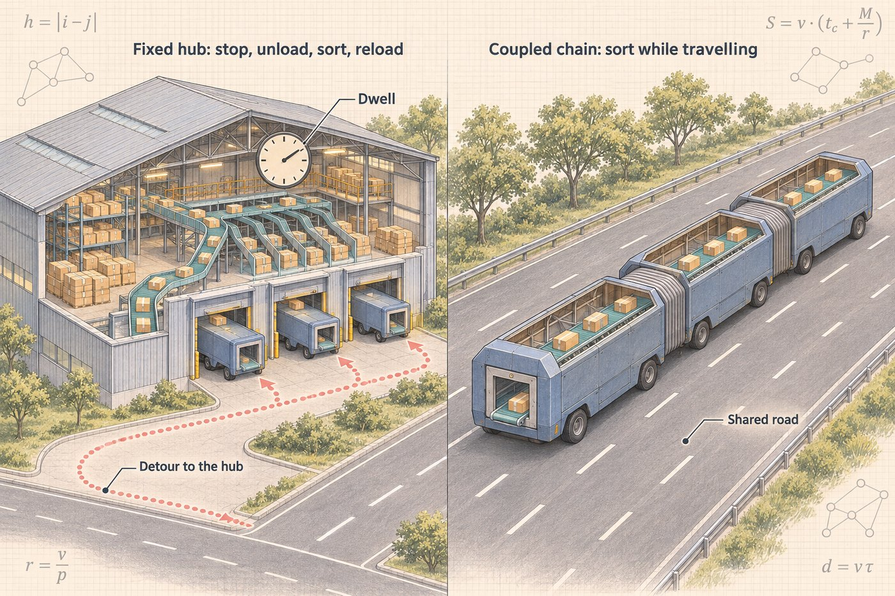
This paper starts from an observation about where vehicles already are. Many cargo vehicles in a region travel the same trunk roads for part of their trips before splitting toward different towns. During that shared stretch they are, in effect, side by side with the very vehicles their cargo needs to reach. If they could join and pass packages to one another, the sort could happen there, on the road, and the hub stop could be skipped.
The system described here, Worm Cargo, is built on that idea. Its vehicles have no driver's cab and so no fixed front or back. They couple end to end into a chain, and the coupling forms an enclosed, deck-level passage between cargo areas. A coordination system reads each package's destination and moves it, through as many vehicles as needed, to the vehicle that will carry it onward. The vehicles then separate. The name comes from the intermediate vehicle, which acts as a moving conduit that packages pass through.
The questions we address are practical ones. How much time does the hub stop actually cost? How many transfers does a chain need, and does the order of the vehicles matter? How fast can parcels move through a coupling? How long must vehicles stay together to finish a sort, and what happens when the shared road is short? We give a small model for each, publish it, and say where the answers are unfavourable.
2. Related work
Hubs and cross-docks. Hub location models [1] and the cross-docking literature [2] treat the fixed transfer node as given and optimise around it: where to place it, how to assign doors, how to schedule trucks. Sortation conveyors inside parcel hubs are themselves the subject of a large body of work on layout and control [3]. Worm Cargo does not improve the hub; it asks how much of its sorting function can be moved into the vehicles.
The physical internet. Montreuil's physical internet vision [4] proposes that goods move through an open network in standard modular containers, routed hop by hop like data packets, through distributed transit centres. The present system shares the hop-by-hop, per-unit routing idea and pushes it one step further: some of the "routers" are the moving vehicles themselves.
Platooning. Truck platooning keeps vehicles close together by wireless control to save fuel. Reviews of platooning projects report energy savings for both the lead and the following trucks [5], and track tests have measured fuel savings of up to 5.3% for a lead truck and up to 9.7% for a trailing truck [6]. Platooning manages the formation; the cargo in each truck stays where it is. Patents on semi-autonomous convoys follow the same line [17].
Modular and combining vehicles. Research on modular autonomous vehicles studies units that join and split in service, mostly for passengers [7]. Independent driving vehicles that combine through mating surfaces so that passengers and cargo can move between them have been patented [13], as have vehicle systems that transload containers between releasably coupled vehicles over a bridge member above the couplers [14].
Transfers between vehicles. Several patents describe moving goods from one vehicle to another: a robotic arm reaching across an air gap between moving autonomous vehicles, including hand-offs along a planned succession of vehicles [12]; two delivery vehicles that rendezvous to exchange a package [15]; a single vehicle carrying its own scanner and onboard sorter feeding its own outfeeds [16]; and robots that shuffle package racks inside one delivery vehicle, with optional rack transfer to an aligned neighbour [18].
The last mile. Surveys of last-mile delivery describe the high cost of dispersed stops, failed attended deliveries and stopped vans [8, 9]. Parcel locker networks decouple delivery from collection [10].
The system here sits across these groups. It takes the per-unit routing of the physical internet, the close travel of platooning and the coupling of modular vehicles, and adds a persistent chain of three or more vehicles through which a single package can be routed past an intervening vehicle to a non-adjacent one, under one coordinating controller, in motion or parked.
| Approach | Vehicles involved | Package-level routing | Past an intervening vehicle | In motion | Fixed facility needed |
|---|---|---|---|---|---|
| Hub or cross-dock [1, 2] | Many, sequentially | Yes, at the hub | Not applicable | No | Yes |
| Platooning [5, 6] | Several | No | No | Yes | No |
| Two-vehicle exchange or rendezvous [12, 15] | A pair at a time | Yes | Only by separate meetings | Varies | No |
| Onboard sorter in one vehicle [16, 18] | One | Within the vehicle | No | Yes | No |
| Combining vehicles, bridge transloading [13, 14] | Two or more | Limited | Not described as routing | Varies | No |
| Coupled chain (this paper) | Three or more, persistent | Yes, per unit | Yes | Yes, or parked | No |
3. The system
The system has four parts: the vehicles, the coupling, the transfer mechanism and the coordination system.
Vehicles. Each cargo vehicle has a chassis on wheels, a propulsion system and a cargo area (Figure 2). In the main embodiment it is driverless and has no manual driving controls, no seat and no windshield. Because nothing fixes a front, each end carries the same coupling portion, deck-level door and transfer equipment. Two vehicles can therefore couple front to back, front to front or back to back, and any vehicle can take any position in a chain. A perception subsystem of cameras, lidar or radar senses the pose of a neighbouring vehicle, and an onboard controller ties propulsion, sensing, coupling and transfer together. The application also covers manned and mixed fleets and other domains such as rail and yard vehicles; this paper models road vehicles only.
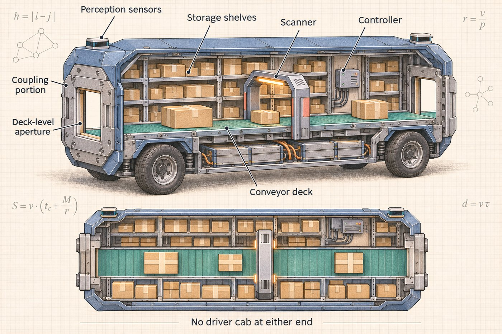
Coupling. The releasable coupling interface is deliberately not tied to one mechanism. It may be a mechanical latch, a magnetic or electromagnetic coupler, a vacuum coupler, or a deployable bridge or extendable conveyor that spans a gap without a rigid joint. What matters is what the engaged coupling does: it defines an inter-vehicle transfer path. In the main embodiment the two coupling portions mate so that doors in the facing end walls line up at deck level, and a flexible bellows gangway of the kind used between bus sections or rail cars encloses the passage (Figure 3). The joint articulates, so a chain can take curves and grades while the passage stays continuous. The coupling can retract flush into the body when not in use, and it can carry energy from one vehicle's battery to another's.
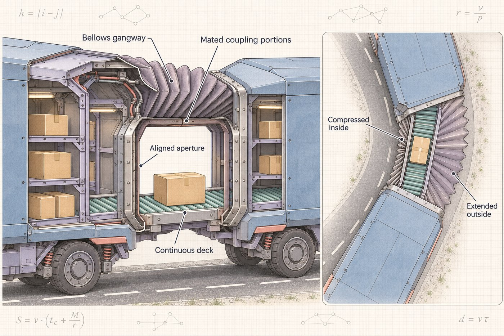
Transfer mechanism. Any powered means of moving a package along the path qualifies: a powered conveyor or roller bed through the aperture, a robotic arm, an autonomous mobile robot that drives from one cargo area into the next, a wheeled platform that lifts and turns parcels, or a conventional sorter such as a cross-belt or sliding-shoe unit. Different vehicles in the same chain may use different mechanisms. Inside each vehicle, a handling system puts each unit in an assigned slot and later retrieves it.
Coordination. A coordination system, which may be a remote fleet controller, a designated lead vehicle or any one vehicle, acts as the single controller of the whole sequence. It reads each package's destination identifier (label, optical code, RFID tag or manifest entry), selects the destination vehicle, plans the route through the chain, commands coupling and transfer, confirms placement, and commands decoupling. It chooses for each operation between an in-motion mode, in which vehicles couple and transfer while travelling along a common route, and a parked mode, in which they do so at a depot or roadside stop. In both, no package is unloaded at a fixed sortation facility between coupling and decoupling.
4. Through-routing in a live chain
The step that distinguishes the system from a two-vehicle exchange is through-routing (Figure 4). A package that starts on one vehicle and is bound for a vehicle two positions away crosses the middle vehicle. It enters through one coupling and leaves through the other. It did not start on the middle vehicle and is not going to it; the middle vehicle is a transit conduit. Reaching the destination takes two transfer events, and both happen while all three vehicles remain coupled as one persistent chain, not in two separate meetings.
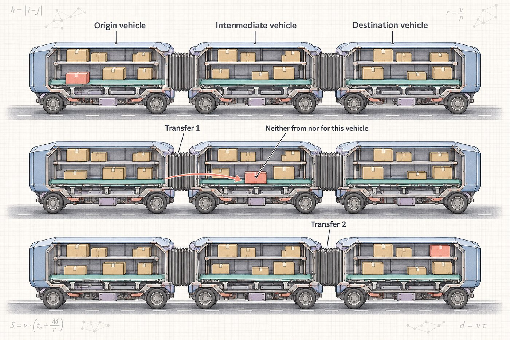
Number the vehicles of a chain 1 to N. A package carried from position i to position j makes
aperture crossings, or hops. Two load patterns bracket practice. In a feeder sort, one vehicle carries a mixed load that it must distribute evenly to the other N − 1. In an exchange, every vehicle carries parcels for every other in equal shares. The mean hops per parcel are
The load on a link matters as much as the number of hops, because every package that must pass a link uses its capacity. If link k joins positions k and k + 1, a feeder at the end pushes its whole load across link 1. In an exchange with m parcels per ordered pair, link k carries m k (N − k) parcels in each direction, the most at the centre of the chain.
| Vehicles N | 3 | 4 | 5 | 6 | 7 | 8 |
|---|---|---|---|---|---|---|
| Feeder at the end | 1.50 | 2.00 | 2.50 | 3.00 | 3.50 | 4.00 |
| Feeder in the middle | 1.00 | 1.33 | 1.50 | 1.80 | 2.00 | 2.29 |
| Uniform exchange | 1.33 | 1.67 | 2.00 | 2.33 | 2.67 | 3.00 |
| Busiest link, feeder at end | 100% | 100% | 100% | 100% | 100% | 100% |
| Busiest link, feeder in middle | 50% | 67% | 50% | 60% | 50% | 57% |
Hops are not the same as handling. If each vehicle stores every arriving parcel and later re-picks it, every hop is a pick and a place. With the switchable transfer spine of Section 7, a parcel passing through a vehicle is never stored there, so a parcel is picked once at its origin and placed once at its destination however many vehicles it crosses. A hub visit, by comparison, involves at least unloading, sorting and reloading.
The same mechanism extends beyond one chain. Over a long journey a parcel can be handed through a succession of chains, each formed by vehicles whose routes coincide for a while. The application gives the example of a parcel from Chicago to Miami carried by many different vehicles in turn. Section 5 models that corridor.
5. What hub dwell costs
The main claim made for sorting on the move is that it removes hub dwell. The model makes the claim explicit so that its size can be judged. For a trip of road length L at speed v, with a circuity factor κ for the extra distance of the chosen path, a conventional trip through nh hubs with dwell D at each takes
where the chain trip makes K relays, each costing a timing slack s while vehicles meet. We assume both trips use driverless vehicles at the same speed, so driver rest rules do not differ between them. The assumptions for the corridor are: L = 2,200 km, roughly the road distance from Chicago to Miami; v = 90 km/h; κhub = 1.08 and κchain = 1.02; nh = 2 and D = 6 h; K = 4 relays at s = 15 min each.
The conventional trip takes 26.4 h of driving plus 12 h of dwell, 38.4 h in all. The chain trip takes 24.9 h of driving plus 1 h of slack, 25.9 h. The saving is 12.5 h, or 32%.
| Hubs on path | 1 h dwell | 2 h | 4 h | 6 h | 8 h | 12 h |
|---|---|---|---|---|---|---|
| 1 | 1.5 | 2.5 | 4.5 | 6.5 | 8.5 | 12.5 |
| 2 | 2.5 | 4.5 | 8.5 | 12.5 | 16.5 | 24.5 |
| 3 | 3.5 | 6.5 | 12.5 | 18.5 | 24.5 | 36.5 |
Two things should be read from Table 3. The saving is nearly all dwell: the shorter path contributes only 1.5 h, less the 1 h of relay slack. And the dwell figure is an assumption, not a measurement. A well-run hub with tight connections and an hour of dwell leaves little to win; a network in which parcels miss a departure wave and wait half a day leaves a great deal. The case for the system is therefore strongest where dwell is long and where parcels pass through several nodes, and weakest for short trips through one efficient hub.
The relay slack s also carries the result. Fifteen minutes assumes the coordination system has already brought partners onto the shared road together. Section 8.3 shows what happens when it has not.
6. Chain order
Because the vehicles have no fixed front or back and can couple in any order, the coordination system can choose the order. The application describes re-ordering a chain, by adding, removing or re-sequencing vehicles, specifically to shorten the routing path of packages. The model shows the effect is large.
Feeder sorts. Take a feeder carrying 1,200 parcels for four regional vehicles. With the feeder at the end of the chain, the parcels make 3,000 transfers in all and every one of them crosses the first link. With the feeder in the middle, the same parcels make 1,800 transfers and the busiest link carries 600 (Figure 5). Moving one vehicle two places cuts the transfers by 40% and halves the peak link load, which Section 7 shows is what sets the time a sort takes.
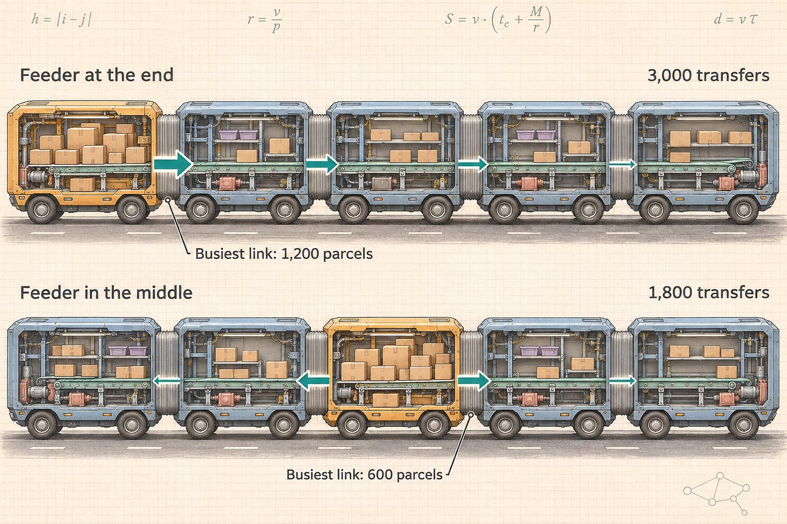
General demand. Real loads are uneven. The model includes a fixed example of six vehicles exchanging 1,030 parcels in ten unequal flows, and checks all 360 distinct orders of the chain (a chain read backwards is the same chain).
| Order | Chain | Total transfers | Mean hops per parcel | Busiest link (parcels) |
|---|---|---|---|---|
| Best of 360 | C E B F A D | 1,610 | 1.56 | 330 |
| As arrived | A B C D E F | 3,320 | 3.22 | 670 |
| Worst of 360 | A B E C D F | 3,670 | 3.56 | 700 |
The best order needs less than half the transfers of the order in which the vehicles happened to arrive, and it halves the busiest link. Finding it is a version of the minimum linear arrangement problem, which is NP-complete in general [11]. For the small chains that matter here, this is not an obstacle: a chain of eight vehicles has 20,160 distinct orders, few enough to check exhaustively in a fraction of a second. The harder problem is physical. Re-ordering a moving chain means decoupling, overtaking and recoupling, which costs road and time. The model treats order as chosen at coupling; it does not price a mid-journey reshuffle.
7. The aperture is the bottleneck
A fixed hub's sorter is a large machine fed from many doors at once. A coupled chain's sorter is a passage the size of a doorway. Its capacity is the first hard limit of the system.
A conveyor moving at speed vc, carrying parcels at a pitch p (parcel length plus gap), passes
parcels per unit time. At 0.5 m/s and a 0.9 m pitch, one aperture passes 2,000 parcels an hour; at 0.3 m/s, 1,200; at 1.0 m/s, 4,000. The aperture is not the only constraint. Parcels must be pulled out of storage at the origin and put away at the destination. If one pick head handles rpick parcels an hour and one put head rplace, a link with np pick heads, nq put heads and d decks carries
We assume 900 parcels an hour for one pick or put head. With one head at each end, a link carries 900 parcels an hour, less than half of what the aperture could pass. Two heads raise it to 1,800, and only with three does the aperture, at 2,000, become the limit. In this model the robots that fetch parcels from shelves, not the doorway, usually set the pace.
For scale, the sortation conveyors of a large parcel hub are fed continuously and divert to many outlets at once [3]. One link of a coupled chain is a much smaller machine. The system does not replace a large hub's capacity with one chain; it would spread sorting across many chains, each handling a modest flow during the time its vehicles share a road. Whether enough chains form at the right times is a network question this paper does not answer.
7.1 The switchable spine
The application describes a transfer architecture that keeps pass-through traffic from consuming handling capacity (Figure 6). Each vehicle carries a deck-level track that ends at self-aligning ports on each coupling face. When the vehicles couple, the ports register and the tracks join into one continuous spine along the chain, so the act of coupling sets up the routing path. In each vehicle a powered turnout, set per parcel from the scanned identifier, takes one of three states: pass-through along the spine, divert-in to the vehicle's local storage, or merge-out from storage back onto the spine. Routing is executed in hardware at each vehicle, and a parcel crossing an intermediate vehicle is never picked or stored there. In the terms of Eq. (5), intermediate vehicles need no pick or put capacity for through traffic; only the aperture rate applies.
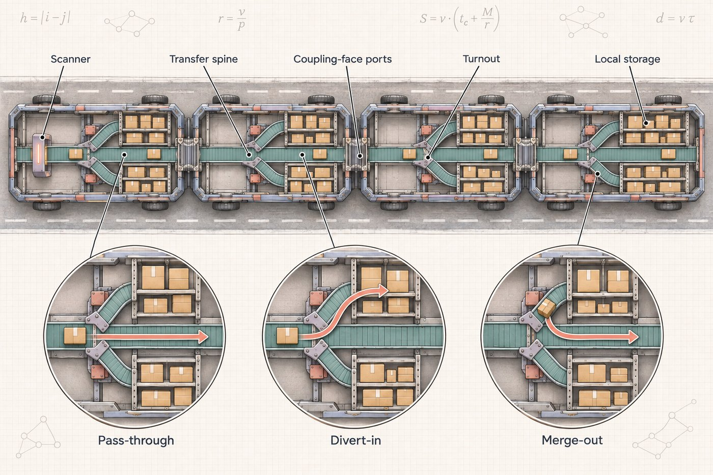
8. How much shared road a sort needs
The in-motion mode has a cost that a hub does not: the vehicles must stay together until the sort is done, which means they must share enough road. This is the second hard limit.
8.1 The shared-segment equation
If the busiest link must carry Mmax parcels at rate rlink, and coupling and decoupling take tc and td, the length of road the vehicles must share at speed v is
We assume tc = 10 min for approach, alignment, engagement, the security handshake and opening the doors, and td = 3 min for closing and release, at 90 km/h. The overhead alone uses 19.5 km of road before a single parcel moves.
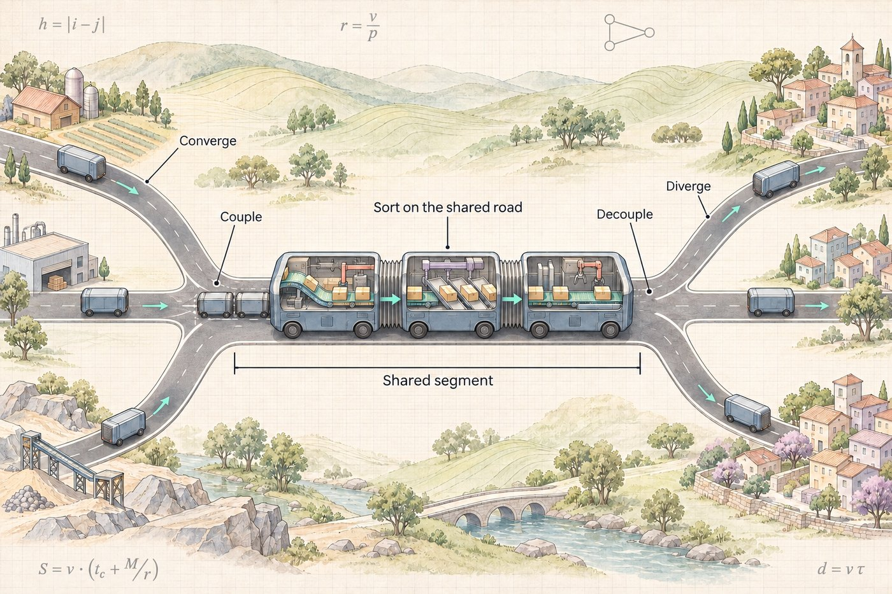
| Parcels | Feeder at end, 1 head | At end, 2 heads | In middle, 1 head per side | In middle, 2 heads per side | In middle, 2 heads per side, 2 decks |
|---|---|---|---|---|---|
| 300 | 50 km (33 min) | 34 km (23 min) | 34 km (23 min) | 27 km (18 min) | 23 km (15 min) |
| 600 | 80 km (53 min) | 50 km (33 min) | 50 km (33 min) | 34 km (23 min) | 27 km (18 min) |
| 1,200 | 140 km (93 min) | 80 km (53 min) | 80 km (53 min) | 50 km (33 min) | 34 km (23 min) |
| 2,400 | 259 km (173 min) | 140 km (93 min) | 140 km (93 min) | 80 km (53 min) | 50 km (33 min) |
Sorting 1,200 parcels takes between 34 and 140 km of road together, depending on chain order, handling heads and decks. These are distances that occur on intercity trunk roads, but not within a city.
8.2 Short shared segments
Turned around, Eq. (6) says how much a given shared segment can sort. With one handling head per link, 30 km of shared road sorts 105 parcels over the busiest link, 50 km sorts 305, and 100 km sorts 805. With the link at the aperture limit the figures are 233, 678 and 1,789, and with two decks 467, 1,356 and 3,578. At 200 km a single-deck, aperture-bound link sorts 4,011 parcels. A shared segment of 15 km sorts nothing at all, because coupling and decoupling consume it, and 20 km sorts 5 to 22.
This is the clearest weakness the model exposes. The in-motion mode suits long shared trunk segments. On short overlaps it does not work, and the parked mode, in which vehicles couple at a roadside stop, is the better choice. The parked mode keeps the main benefit, since nothing is unloaded at a fixed facility, but the vehicles stand still for the sort, and Eq. (6) then gives the dwell time instead of a distance.
Exchanges. When every vehicle sends 60 parcels to every other and both directions share one aperture, the centre link of a four-vehicle chain carries 240 parcels each way and the exchange takes 14 minutes of sorting and 41 km of road; five vehicles, 360 each way, 22 minutes, 52 km; six vehicles, 540 each way, 32 minutes, 68 km; eight vehicles, 960 each way, 58 minutes, 106 km. Re-ordering cannot help a uniform exchange, because every position is equally loaded by symmetry. Longer chains carry more cargo but take disproportionately longer to sort.
8.3 Catching up
All of this assumes the partners reach the shared road together. If a follower must catch a leader that is a time gap τ ahead at speed v, by driving Δv faster, the distance it covers before it can couple is
| Gap | Δv = 5 km/h | Δv = 10 km/h | Δv = 20 km/h |
|---|---|---|---|
| 1 min | 18 min, 28 km | 9 min, 15 km | 4 min, 8 km |
| 5 min | 90 min, 142 km | 45 min, 75 km | 22 min, 41 km |
| 10 min | 180 min, 285 km | 90 min, 150 km | 45 min, 82 km |
| 20 min | 360 min, 570 km | 180 min, 300 km | 90 min, 165 km |
A five-minute gap closed at 10 km/h above cruising speed takes 45 minutes and 75 km, more than the whole sort in most rows of Table 5. Speed limits cap Δv, and the leader slowing down only moves the cost to the leader. The conclusion is that in-motion coupling depends on scheduling, not on chasing: the coordination system has to time departures so that vehicles enter the shared segment together, within a minute or so. That is a planning burden a hub does not impose, and it is the reason the relay slack in Section 5 is an assumption to be tested rather than a given.
9. More capacity through one coupling
Because the aperture and the handling heads limit the rate, the application describes multiplying the passages within a single coupling (Figure 8). Each vehicle has two or more stacked decks, and each deck has its own deck-level port at each coupling face, positioned so that one coupling event registers every deck's port with the matching port of the neighbour. Each deck carries its own transfer mechanism, a conveyor or a wheeled transfer robot, and routes parcels horizontally through its own passage. The decks transfer in parallel, and no parcel is lifted or lowered between decks. The passages may each have their own gangway or share one full-height gangway.
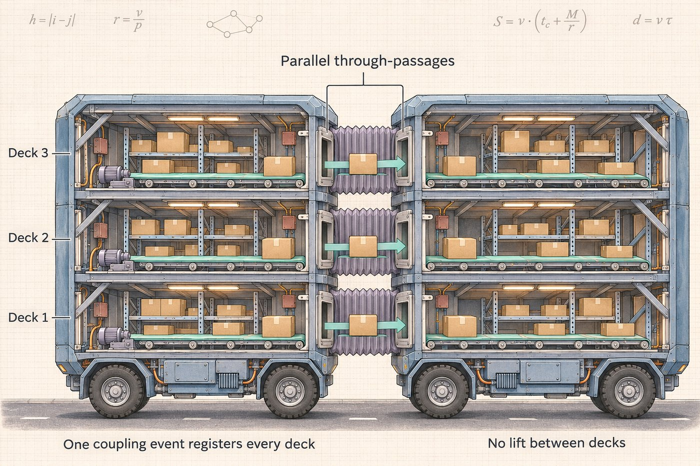
In the model, each deck multiplies the link rate. Moving 1,200 parcels over one link with two handling heads per deck takes 40 minutes of sorting and 80 km of shared road on one deck, 20 minutes and 50 km on two, and 13 minutes and 39 km on three. The returns diminish because the fixed 19.5 km of coupling overhead does not shrink. Combined with a feeder in the middle, two decks bring the 1,200-parcel sort of Table 5 down to 34 km. Multi-deck vehicles are not new in themselves; the point here is that a single coupling event opens all the passages at once.
10. Custody, safety and security
A chain of vehicles that hand cargo to one another raises three kinds of risk: a parcel going to the wrong place, a person or object in the passage, and a vehicle that should not be trusted.
Custody in hardware. Each vehicle can carry a per-unit release actuator wired in a series hardware enable line (Figure 9, left). A parcel can be released only when a coupling-continuity sensor confirms that the coupling to the next vehicle is mechanically engaged and the controller confirms that the next vehicle is the correct one for that parcel's destination. A parcel can therefore leave a vehicle only into its intended next vehicle and never into open space.
Presence sensing. A light curtain, laser scanner or pressure-sensitive plate spans the passage. If it detects a person or object while the chain is moving, the transfer mechanism stops and a hold prevents the coupling from releasing until the passage is clear.
Attested coupling. Before a coupling engages or a door opens, adjacent vehicles perform a handshake in which each presents a hardware-rooted cryptographic identity and evidence of its software integrity. The coordination system may also command a candidate vehicle to make a small, verifiable movement and confirm through its sensors that the vehicle alongside is the one that answered. A segmented control bus keeps each vehicle's propulsion and braking separate from the shared transfer domain, so that a compromised vehicle cannot spread commands along the chain, and each vehicle keeps authority over its own brakes.
Fail-safe decoupling. On a fault, a lost link, a failed re-attestation or a loss of alignment, the system halts or reverses any parcel in transit to a safe position, closes the doors, and separates the vehicles to a safe gap without abrupt relative motion.
Thermal rescue. If a vehicle carrying temperature-sensitive parcels develops a cooling fault, the coordination system can re-route those parcels through the chain, while it remains coupled, to another vehicle that can hold the required temperature (Figure 9, right).
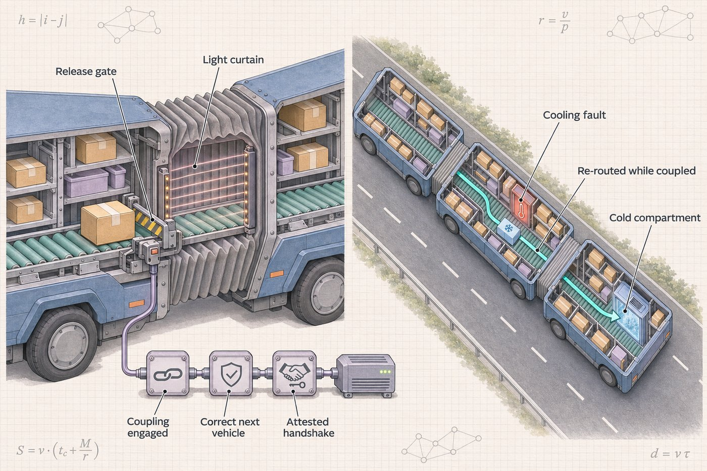
Exposure. Through-routing has one cost the model can state simply. Each aperture crossing is a transition at which a parcel can jam or misroute. With an independent fault probability p per crossing, the chance a parcel meets at least one fault in h hops is
At p = 0.001, one hop gives 0.10%, three hops 0.30% and five hops 0.50%. The exposure grows almost linearly with hops, which is one more reason to choose chain order well. No value of p is known for this kind of transfer; the figure is illustrative.
11. The last mile
The same vehicles can make final deliveries along their route. The application pairs them with a double-sided roadside parcel locker (Figure 10). The vehicle stops parallel to the locker, opens a roll-up door on its side, and its transfer mechanism places each parcel into a compartment of suitable size through the street-facing side. The recipient later opens the same compartment from the sidewalk side with a code or scannable credential sent to a phone. Loading never blocks the sidewalk, the recipient never steps into the road, and because the door is on the vehicle's side, traffic ahead and behind is not obstructed.
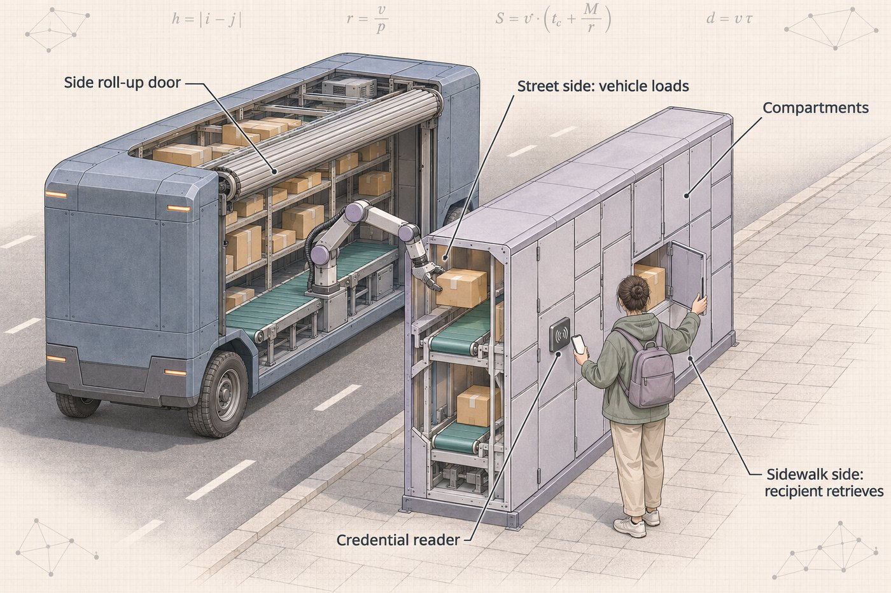
The time a vehicle spends beside the locker is
With an assumed 60 s to align and 25 s to place each parcel, one parcel takes 1.4 minutes, five take 3.1, ten take 5.2 and twenty take 9.3. Delivery and collection are separated in time, which removes the failed attended delivery that surveys identify as a major last-mile cost [8, 9], as locker networks do generally [10]. What the locker requires, a structure at the kerb loadable from the roadway, is a question for cities, and the model says nothing about it.
12. Limitations and evaluation plan
This is a design and analysis paper. Its limits should be plain.
No prototype. No vehicle, coupling or transfer mechanism of this kind has been built. Every number above is modelled.
The benefit rests on the dwell assumption. Section 5 shows the time saving is almost entirely hub dwell. Its real distribution, and how much of it a well-run hub already avoids, has to come from network data, not from this model.
Capacity per chain is small. One link passes about 2,000 parcels an hour at best in the base case, and less when handling heads are few. The system spreads sorting across many chains; it does not reproduce the throughput of a large hub in one place.
Short overlaps do not work in motion. About 20 km of shared road goes to coupling overhead, and a 1,200-parcel sort needs 34 to 140 km. Where routes overlap briefly, the parked mode must be used.
Rendezvous is assumed. The model assumes partners meet with 15 minutes of slack. Table 6 shows that chasing a partner even a few minutes ahead is costly. Whether enough vehicles share the right roads at the right times, with enough cargo to exchange, depends on fleet density and scheduling, and no network-level simulation has been done.
Coupling in motion is unproven. Joining two road vehicles at speed, with an enclosed passage between them, raises vehicle dynamics, regulatory and public-acceptance questions far beyond this model. Platooning has been tested on public roads [5, 6]; physical coupling at speed has not, to our knowledge, been demonstrated for road cargo vehicles.
Simplified handling. Pick and put rates, conveyor speed and parcel pitch are assumed. Real parcels vary in size and weight, and some will not fit a doorway conveyor.
The tests that would settle these questions, in order of cost:
| Stage | Test | Question answered |
|---|---|---|
| 1. Network simulation | Replay real parcel flows and vehicle routes for a region with chain formation, ordering and the parked fallback | How often do partners share enough road? What share of hub dwell is actually removed? |
| 2. Bench transfer | Two static cargo bodies with a coupling, aperture conveyor and pick heads; mixed parcel sizes | What are the real aperture and handling rates? What is the jam rate per crossing? |
| 3. Parked chain | Three or more vehicles coupling at a yard, feeder and exchange sorts, spine and turnouts | Does through-routing work end to end? What are coupling and decoupling times? |
| 4. Low-speed coupling | Coupling and transfer in motion on a closed track at increasing speed, with fail-safe decoupling | Can vehicles couple, hold a passage and separate safely in motion? |
| 5. Security | Attested handshake, physical challenge and segmented bus under fault and attack injection | Can a rogue or faulty vehicle be kept out of custody and control? |
| 6. Last mile | Double-sided locker loaded from a vehicle at a test kerb | What is the real time at the kerb and the retrieval experience? |
13. Conclusion
A hub-and-spoke network sorts parcels by bringing them to a stop in a building. The system described here sorts them in the vehicles that already share a road: driverless cargo vehicles couple into a live chain, an enclosed deck-level passage forms between them, and each package is routed, through intermediate vehicles if necessary, to the vehicle that will carry it onward.
The model finds that the time this removes is essentially hub dwell, about 12.5 hours on a long corridor with two six-hour hub visits, and much less where dwell is short. It finds that chain order matters a great deal, and that the best order for a small chain is easy to compute. And it finds two hard limits: a coupling aperture is a small sorter, often limited further by the robots that fetch parcels, and sorting in motion needs tens of kilometres of shared road and tightly scheduled rendezvous. Multi-deck coupling and the parked mode soften those limits; they do not remove them.
The idea therefore looks best on long trunk corridors, with loads that are pre-grouped, partners that are scheduled to meet, and the parked mode as the fallback. What remains is to simulate it on real flows, and then to build one.
The model is short and is published with this paper as model.py, so the assumptions can be changed and every table regenerated.
References
- M. E. O'Kelly, "A quadratic integer program for the location of interacting hub facilities," European Journal of Operational Research, vol. 32, no. 3, pp. 393–404, 1987. doi:10.1016/S0377-2217(87)80007-3
- J. Van Belle, P. Valckenaers and D. Cattrysse, "Cross-docking: State of the art," Omega, vol. 40, no. 6, pp. 827–846, 2012. doi:10.1016/j.omega.2012.01.005
- N. Boysen, D. Briskorn, S. Fedtke and M. Schmickerath, "Automated sortation conveyors: A survey from an operational research perspective," European Journal of Operational Research, vol. 276, no. 3, pp. 796–815, 2019. doi:10.1016/j.ejor.2018.08.014
- B. Montreuil, "Toward a Physical Internet: meeting the global logistics sustainability grand challenge," Logistics Research, vol. 3, no. 2–3, pp. 71–87, 2011. doi:10.1007/s12159-011-0045-x
- S. Tsugawa, S. Jeschke and S. E. Shladover, "A review of truck platooning projects for energy savings," IEEE Transactions on Intelligent Vehicles, vol. 1, no. 1, pp. 68–77, 2016. doi:10.1109/TIV.2016.2577499
- National Renewable Energy Laboratory, "NREL Highlight: Truck Platooning Testing," fact sheet NREL/FS-5400-64133, 2015. osti.gov/biblio/1215230
- L. Ye and T. Yamamoto, "Exploring modular mobility: industry advancements, research trends, and future directions on modular autonomous vehicles," arXiv:2412.17885, 2024. arxiv.org/abs/2412.17885
- N. Boysen, S. Fedtke and S. Schwerdfeger, "Last-mile delivery concepts: a survey from an operational research perspective," OR Spectrum, vol. 43, pp. 1–58, 2021. doi:10.1007/s00291-020-00607-8
- T. Bosona, "Urban freight last mile logistics: challenges and opportunities to improve sustainability: a literature review," Sustainability, vol. 12, no. 21, 8769, 2020. doi:10.3390/su12218769
- Y. Deutsch and B. Golany, "A parcel locker network as a solution to the logistics last mile problem," International Journal of Production Research, vol. 56, no. 1–2, pp. 251–261, 2018. doi:10.1080/00207543.2017.1395490
- M. R. Garey, D. S. Johnson and L. Stockmeyer, "Some simplified NP-complete graph problems," Theoretical Computer Science, vol. 1, no. 3, pp. 237–267, 1976. doi:10.1016/0304-3975(76)90059-1
- J. A. Healey and O. U. Florez Choque (Intel), "Autonomous mobile goods transfer," U.S. Patent 11,853,062 B2, 2023.
- T. Gecchelin and E. Spera, "Selectively combinable independent driving vehicles," U.S. Patent 11,535,314 B2, 2022.
- A. D. Paul, N. T. North and M. Karunaratne (Transportation IP Holdings), "Vehicle system and method for cargo transloading," U.S. Patent 12,151,750 B2, 2024.
- E. V. Kline and S. K. Rakshit (IBM), "Mobile package delivery," U.S. Patent 11,164,138 B2, 2021.
- M. Veasey (Deutsche Post), "Transportation vehicle for mobile sorting of shipments," U.S. Patent 10,350,643 B2, 2019.
- J. P. Switkes, J. C. Gerdes, E. Berdichevsky et al. (Peloton Technology), "Systems and methods for semi-autonomous vehicular convoys," U.S. Patent 9,665,102 B2, 2017.
- T. Brady (Amazon Technologies), "Automated mobile sortation and delivery systems and methods," U.S. Patent 12,473,149 B1, 2025.
How to cite
B. Goldstein, "The Sorting Hub That Drives: Routing Packages Through a Coupled Chain of Autonomous Cargo Vehicles," Benny Labs Foundation working paper, November 2026. https://bennylabs.org/worm-cargo/paper/